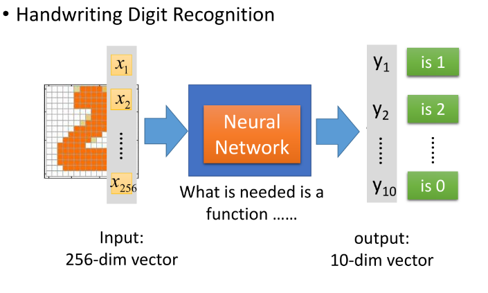
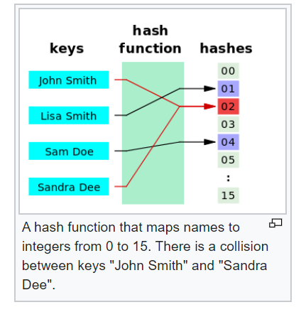

The story began that when I reviewed Hash table in Data Structure lesson and I saw the figure of Hash table principle ,suddenly , a idea comes to my mind that there’s somehow relationship between ANN(artificial neural network ) and Hash Table .


We could notice that both two figures have three part : the left ,the middle ,the right ; Actually , each part of the middle is function part . The only difference between these is that the function of ANN is trained by tons of data and the function of Hash table ,called hash function ,is designed by manual actions usually .
The former funciton is unknown ,black box .But the later function is known ,white box .
The term "hash" offers a natural analogy with its non-technical meaning (to "chop" or "make a mess" out of something), given how hash functions scramble their input data to derive their output.[20] In his research for the precise origin of the term, Donald Knuth notes that, while Hans Peter Luhn of IBM appears to have been the first to use the concept of a hash function in a memo dated January 1953, the term itself would only appear in published literature in the late 1960s, on Herbert Hellerman's Digital Computer System Principles, even though it was already widespread jargon by then.[21]Warren McCulloch and Walter Pitts[4] (1943) opened the subject by creating a computational model for neural networks.[5] In the late 1940s, D. O. Hebb[6] created a learning hypothesis based on the mechanism of neural plasticity that became known as Hebbian learning. Farley and Wesley A. Clark[7] (1954) first used computational machines, then called "calculators", to simulate a Hebbian network. Rosenblatt[8] (1958) created the perceptron.[9] The first functional networks with many layers were published by Ivakhnenko and Lapa in 1965, as the Group Method of Data Handling.[10][11][12] The basics of continuous backpropagation[10][13][14][15] were derived in the context of control theory by Kelley[16] in 1960 and by Bryson in 1961,[17] using principles of dynamic programming.According to these history , the first ANN came out at 1943 and the first concept of hash function came out at 1953 . The time between these are so close , it can’t be wasn’t somehow relationship in there !!
In computing, a hash table (hash map) is a data structure that implements an associative array abstract data type, a structure that can map keys to values. A hash table uses a hash function to compute an index, also called a hash code, into an array of buckets or slots, from which the desired value can be found. During lookup, the key is hashed and the resulting hash indicates where the corresponding value is stored.I supposed Hash is people’s name who invented Hash function and Hash table . But actually , it wasn’t .
Why it is called “hash table”, or “hash function”?
Artificial neural networks (ANN) or connectionist systems are computing systems vaguely inspired by the biological neural networks that constitute animal brains.
The data structures and functionality of neural nets are designed to simulate associative memory. Neural nets learn by processing examples, each of which contains a known "input" and "result," forming probability-weighted asociations between the two, which are stored within the data structure of the net itself. (The "input" here is more accurately called an input set, since it generally consists of multiple independent variables, rather than a single value.) Thus, the "learning" of a neural net from a given example is the difference in the state of the net before and after processing the example. After being given a sufficient number of examples, the net becomes capable of predicting results from inputs, using the associations built from the example set. If a feedback loop is provided to the neural net about the accuracy of its predictions, it continues to refine its associations, resulting in an ever-increasing level of accuracy. In short, there is a direct relationship between the number and diversity of examples processed by a neural net and the accuracy of its predictions. This is why a neural net gets "better" with use. What is interesting about neural nets is that because they are indiscriminate in the way they form associations, they can form unexpected associations, and reveal relationships and dependencies that were not previously known.We discussed the similarity and differences of ANN and Hash table in aspects of principle and history , which hopefully we could discover the new idea that are able to optimize algorithms of both or apply to the some specific issues . One of the applications ,in my opinion , is that the Hash function could be replace by method of DeepLearning whose function trained by data . The advantages of this method is save algorithms development time of handled design .
On the other hand , because of the same structure form –input, functions, output – it’s unfortunately that , in some way ,there is no prograss about AI field during computer science development .
If we want to make some application using ideas we discovered ,we have to research in it more .
wiki/Artificial_neural_network
Why it is called “hash table”, or “hash function”?